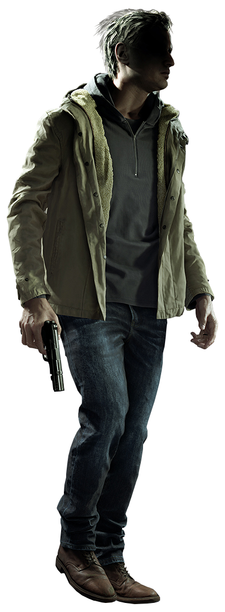
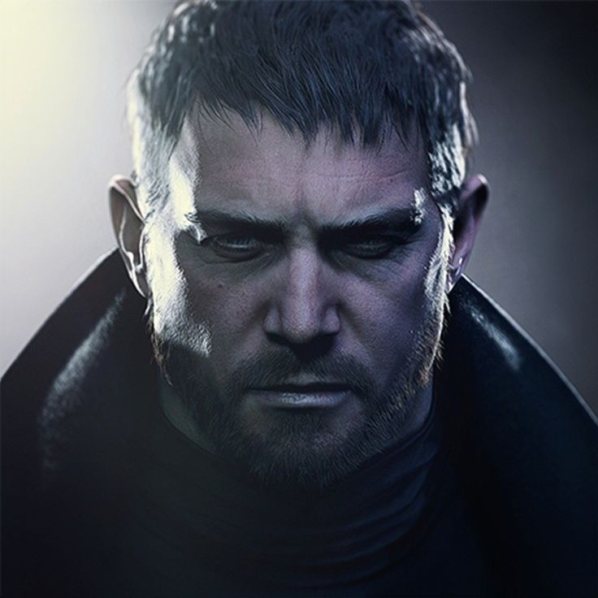
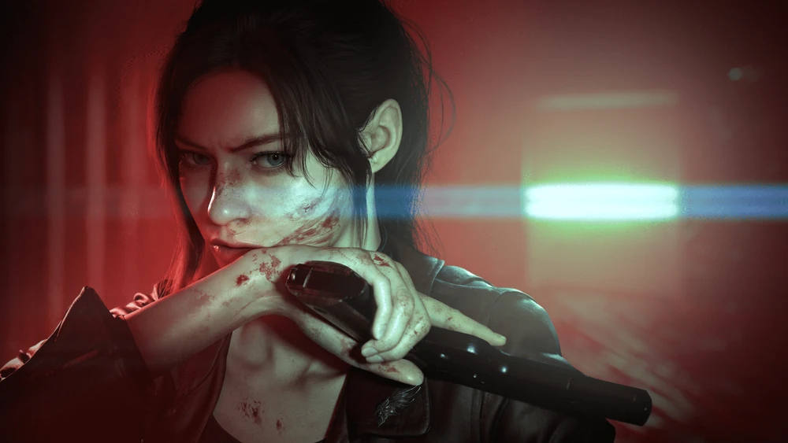
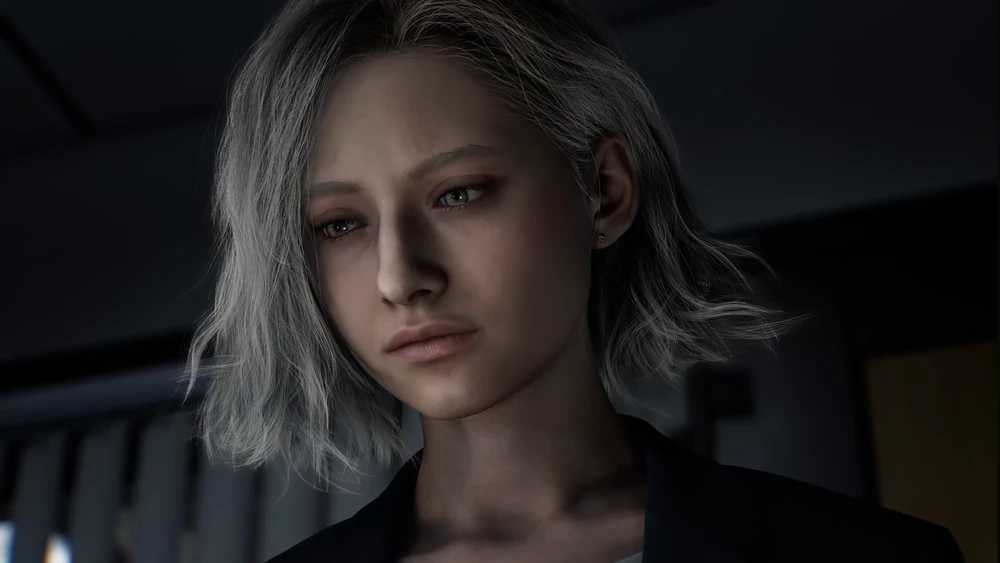

Ethan Winters
"Ethan Winters was an American systems engineer infected with a weaponized species of Mold during the 2017 Dulvey incident caused by Eveline. After being rescued by Chris Redfield, Ethan received military training and started a family with his wife, Mia, and their daughter, Rosemary. In February 2021, he fought to rescue Rosemary from Miranda, who intended to use her as a vessel for her deceased daughter, Eva. Ethan ultimately saved his family by sacrificing his own life.
INVESTIGATE FURTHER


